Source-backed deep dive · pinned repository revisions
Kafka + Flink: pods, threads, RPCs and recovery
Start at the cluster boundary, follow one record into the implementation, then practice the failure and presentation mental models.
Start here: the answer in one minute
A Kafka API is a versioned binary request/response contract. A Kafka role is the owner that handles it. A pod is a deployment/failure boundary. A thread is an execution boundary. These are four different things.
| Question | Answer |
|---|---|
| Does every component get a pod? | No. Kafka group and transaction coordinators are broker components. KafkaSource and KafkaSink are connector libraries instantiated inside Flink TaskManager processes. |
| Are source, transform and sink in the same pod? | Sometimes. Chainable operators can run in one task/mailbox thread. Separate tasks may share a TaskManager JVM, or run on different TaskManagers/pods. Placement depends on the job graph and available slots. |
| Does every record make an RPC? | No. Kafka batches records into Produce/Fetch requests. Chained Flink operators use direct calls; inter-task data uses buffered channels. Checkpoint/deployment RPCs are a separate control path. |
| What survives a pod failure? | Replicated Kafka logs and durable Flink checkpoints, if configured and still available. An in-memory queue or producer buffer does not become durable because it lives in a pod. |
| What provides source-to-sink exactly-once? | A recoverable source position + consistent operator state + recoverable/idempotent sink commit. Reprocessing can happen; externally committed effects must not be duplicated. |
Reading route: placement → a record journey → broker threads → source/transform/sink threads → checkpoint/commit → failure cases → presentation mental model. Keep the complete Kafka RPC atlas open as a lookup tab.
1. From cluster to pod to task to operator
A deployment is not one pod per box
Illustrative Kubernetes placement, not an observed cluster. Kafka brokers and Flink TaskManagers are separate processes; connector libraries live in TaskManagers. KRaft controllers are shown as a separate quorum; combined-role deployments also exist.
| Layer | Lives where | What it owns |
|---|---|---|
| Kafka broker | Usually one broker process per Kubernetes pod, or a process on a VM | Many topic-partition replicas, listeners, request handlers, caches and broker coordinator services. A broker can lead P0 and follow P1 at the same time. |
| KRaft controller | Dedicated controller processes, or combined broker/controller roles when configured | Cluster metadata decisions: registrations, topic/partition assignments, leadership and feature levels. A quorum replicates the metadata log; it is not the payload path for each application record. |
| Flink JobManager | A process/container; deployment mode determines job and cluster lifecycle | Dispatcher/ResourceManager and per-job JobMaster/scheduler. SourceCoordinator contains the connector enumerator. User source-enumerator code can run here; per-record transformations normally run in TaskManagers. |
| Flink TaskManager | Worker JVM, usually one per worker pod | TaskExecutor control endpoint, tasks/mailboxes, managed memory, network buffers, state backends and connector client threads. |
| Slot | Scheduling/resource allocation inside a TaskManager | Not a process, CPU core or thread. Slot sharing can place several tasks from the same job into one slot; it does not make those tasks one operator chain. |
| Task / subtask / chain | A deployed parallel instance in a TaskManager | A chain of synchronous operators typically executes in one StreamTask thread. A task can also have fetcher, producer, network and async-snapshot helper threads. |
| Container / pod / Kubernetes node | Infrastructure around the above | A pod can have sidecars and multiple containers; a node can host several pods. “Different pod” is not automatically “different failure domain.” |
Example, not a cluster observation: input topic has four partitions; KafkaSource parallelism is two; parse is chained with each source; keyed aggregate and sink each have parallelism two. Each source reader can own two partitions. Two TaskManagers with two slots each provide a possible placement, not a promise that each operator gets a dedicated slot or pod. Scheduler decisions, chaining, slot-sharing groups, resource profiles and anti-affinity determine the actual result.
The connector JAR must be available to the user-code classloader where its coordinator and reader/writer code run. Adding a Kafka connector does not launch Kafka Connect workers. Kafka Connect and Kafka Streams are different runtimes: Connect has connector/task worker processes and internal topics; Streams runs inside application instances and uses Kafka for repartition/changelog topics.
2. Follow order-7 from produce to consume to output
Illustrative record: key customer-7, value {orderId: 7, amount: 50}, input partition P0, offset 104. Offsets are scoped to a topic partition, not globally unique record IDs. An output record receives its own offset; it does not inherit 104.
| Step | Execution / message | Result |
|---|---|---|
| 1. Application send | KafkaProducer.send serializes key/value, selects a partition and appends to RecordAccumulator. Sender assembles batches and performs broker I/O. | send returning a Future is not a durable broker acknowledgement. Buffer pressure or metadata lookup can also block the calling thread. |
| 2. Locate owners | Bootstrap → ApiVersions / Metadata; use advertised broker addresses for the partition leader. | bootstrap.servers is an entry list, not a proxy traversed for every request. |
| 3. Append and replicate | Produce to P0 leader → authorization/validation → append → followers Fetch from leader. | With acks=all, completion waits for the required replicated position subject to ISR/min-ISR policy. |
| 4. Source fetch | KafkaSource reader’s consumer Fetches input partitions at their assigned positions. | The response is record batches with offsets/metadata, not calls to the transform operator. |
| 5. Emit and transform | Fetcher queue → mailbox → KafkaRecordEmitter → source output → map/keyed processing. | After successful deserialize/emit, split state advances to 105. A prefetched but un-emitted record is not yet part of this source state. |
| 6. Write output | KafkaWriter serializes output → KafkaProducer accumulator → Sender → output partition leader. | In exactly-once mode the output belongs to an open transaction, not yet visible to read_committed readers. |
| 7. Complete CP42 | Flink persists source position 105, relevant operator state and sink recovery/committable state. | CP42 is the recovery boundary. Source-offset bookkeeping in Kafka is separate. |
| 8. Publish transaction | Sink committer commits T42 → coordinator decision → markers → eligible LSO advance. | Downstream read_committed consumers can see the committed output. Their own processing/offset commit is another boundary. |
Bootstrap finds owners; owners serve requests
Simplified healthy path. Connections are reused; TLS/SASL and ApiVersions happen per connection as needed. The transaction coordinator and group coordinator can be different brokers from both partition leaders.
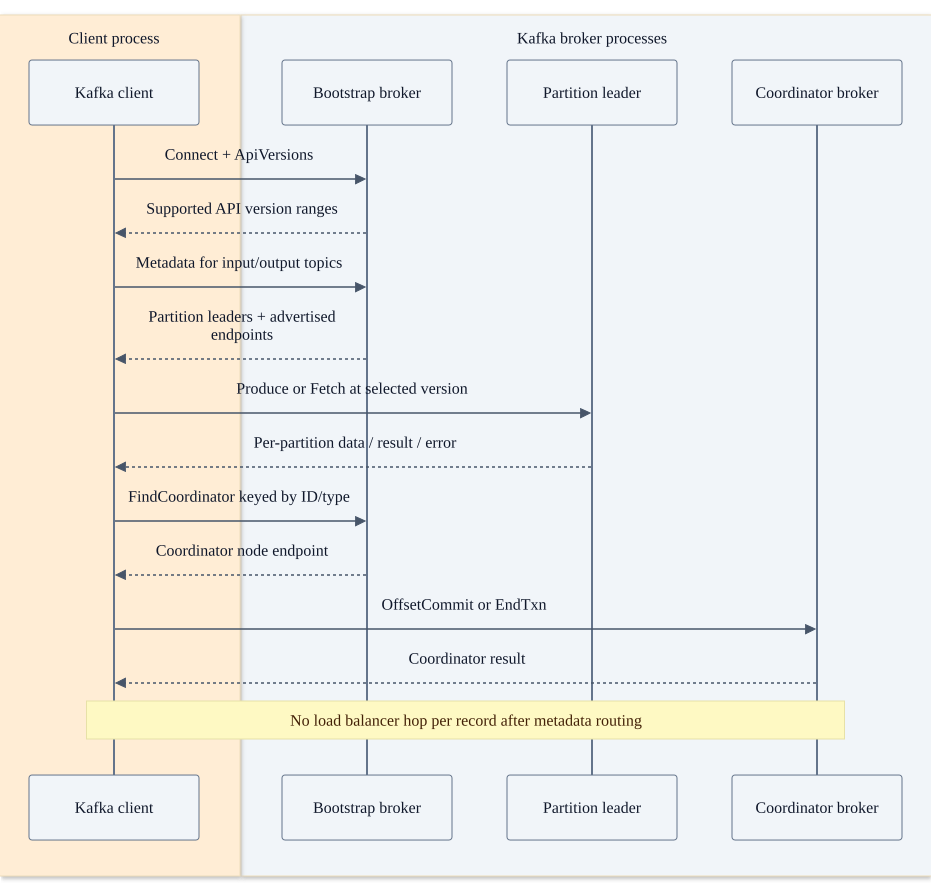
DNS, TLS certificate names, SASL credentials, ACLs and network policies must work for all advertised owners, not only the bootstrap endpoint. Kafka’s ordinary protocol is binary over TCP (optionally TLS/SASL), not HTTP/gRPC. A schema registry, if used for payload serialization, is a separate service and protocol.
3. Zoom into Kafka: server, queues, threads and log files
Inside one Kafka broker process
These are threads, queues and components within a broker JVM—not separate pods. Replica fetchers in other brokers pull from this leader. Delayed operations release handler threads rather than blocking one thread per waiting request.
| Component / module | Work and thread boundary | Why it matters |
|---|---|---|
| clients: KafkaProducer / Sender / NetworkClient | Application-side buffering; Sender owns producer network progress and completes callbacks. | A producer is not a separate broker. Slow callbacks can stall producer network progress. |
| core: SocketServer.Acceptor / Processor | Acceptor distributes new connections; Processor uses a selector, reads complete frames, queues requests and writes responses. | One network thread multiplexes many connections; not one pod or dedicated thread per client. |
| server/core: RequestChannel / KafkaRequestHandler / KafkaApis | Handler pool dequeues and dispatches by API key. Requests may complete asynchronously through callbacks. | A request waiting for replication need not occupy a handler for the entire wait. Queues can still saturate. |
| core/storage: ReplicaManager / Partition / UnifiedLog / LogSegment | Validate leadership, epochs, record batches, producer sequence and ISR; append to partition logs. | A topic has multiple partition logs across brokers; storage placement is not the same thing as consumer group ownership. |
| Replica fetcher threads | Follower brokers request leader data with Fetch and append their own copies. | Replication is pull-based. Replication factor is not a count of application consumers. |
| Group coordinator / transaction coordinator | Ownership follows partitions of the respective internal topics. Components may coexist with data partition leaders on one broker. | FindCoordinator resolves an owner for a key; moving ownership requires loading durable state and fencing stale incarnations. |
| metadata / raft: QuorumController / KafkaRaftClient | Controller decisions are serialized and replicated through the KRaft metadata quorum. | Metadata quorum majority is a different rule from user-partition ISR acknowledgement. |
Produce durability is partition replication
Example: replication factor 3, acks=all, min.insync.replicas=2. Both followers are initially in ISR. A real request batches many records/partitions; followers repeat Fetch calls and the leader learns their advanced offsets.
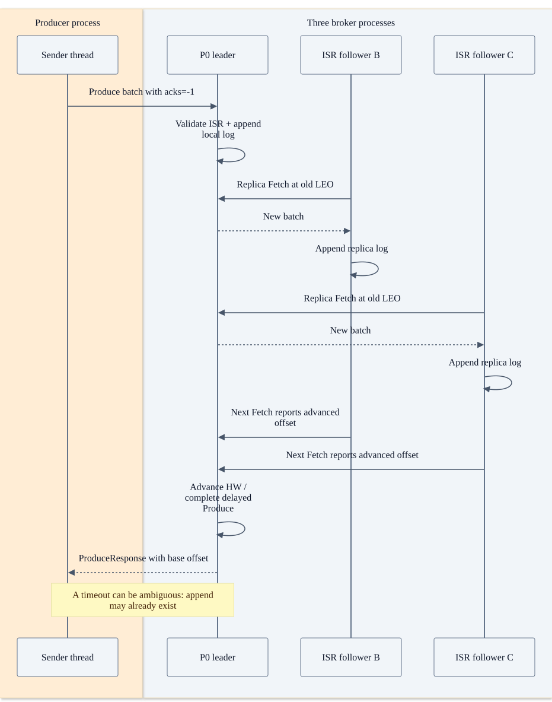
Partition storage includes append-only .log segments plus offset/time indexes, transaction indexes and producer/epoch recovery metadata. The OS page cache is part of the hot path. Appending, replicating, flushing and making a transaction visible are separate events. acks=all is not a promise that every replica has performed a physical disk fsync for that batch.
Example: RF=3 and min.insync.replicas=2. If all three replicas are in the relevant ISR, acks=all is not simply “wait for any two”; it follows the ISR/high-watermark completion rule. If one follower falls out and ISR remains sufficient, writes can continue. If ISR falls below the minimum, safe writes are rejected or fail—even if the leader process is alive. Current eligible-leader/ISR details are version- and feature-dependent.
4. KafkaSource: control plane and data plane are different
| Path | Concrete components | Calls / state |
|---|---|---|
| Coordinator path in JobManager | SourceCoordinator → KafkaSourceEnumerator → AdminClient | Discover topic partitions and resolve initial offsets via async work; serialize state changes/assignments on coordinator thread; deliver AddSplitEvent to readers. |
| Task control path | TaskExecutor operator-event gateway → StreamTask mailbox → SourceOperator | Deserialize assigned splits and call sourceReader.addSplits. Coordinator events are control messages, not Kafka record payloads. |
| Fetcher path in TaskManager | KafkaSourceFetcherManager → SplitFetcher → KafkaPartitionSplitReader | Own KafkaConsumer API calls, explicitly assign partitions, seek start offsets, poll and enqueue RecordsWithSplitIds. |
| Mailbox data path | SourceReaderBase.pollNext → KafkaRecordEmitter.emitRecord | Deserialize/emit records and mutate KafkaPartitionSplitState.currentOffset. This is the state later snapshotted. |
| Snapshot / restore | SourceOperator → KafkaSourceReader.snapshotState → KafkaPartitionSplit | Persist next offsets in Flink state. Restore/seek from checkpointed split offsets; initializer settings are not a replacement for existing restored state. |
| External group offsets | notifyCheckpointComplete → fetcher manager → consumer.commitAsync | Optional Kafka OffsetCommit after checkpoint completion. Failure affects monitoring/interoperability, not the source recovery position stored by Flink. |
One KafkaSource subtask crosses a thread boundary
A SplitFetcher owns consumer API calls. A bounded handoff queue feeds the task mailbox, where deserialization/emission advances checkpointed split state. Consumer internal network threading depends on client configuration/version.
Does group.id mean Kafka’s group coordinator assigns the Flink source partitions?
No for this ordinary FLIP-27 KafkaSource. The enumerator assigns Flink splits and the reader calls consumer.assign(...), not subscription-based group assignment. Do not draw JoinGroup/SyncGroup/Heartbeat as the source’s mandatory assignment loop. A group ID can still be used for initial committed-offset lookup and external offset commits.
Two independently deployed Flink jobs using the same group ID do not thereby become one coordinated split-assignment job. They can read the same partitions and overwrite the same external group offsets. Give jobs clear identities; let Flink own assignment within each job.
Does KafkaConsumer have its own network thread?
The connector-level invariant is single-threaded consumer API ownership by the split fetcher. In the inspected Kafka client, ConsumerDelegateCreator chooses ClassicKafkaConsumer or AsyncKafkaConsumer according to group.protocol. Classic polling drives much of the network work on the calling path; the asynchronous consumer has a dedicated internal network thread. This implementation choice does not turn the connector into a separate pod or move operator state mutation out of the Flink mailbox.
Parallelism: with four partitions, at most four ordinary source readers can simultaneously own nonempty distinct partition splits; extra readers can be idle. A reader can multiplex many partitions. Partition discovery, rescaling and checkpoint restore change assignment. Reading more records into a client/queue can improve throughput but does not advance the durable recovery offset until they are emitted and checkpointed.
5. Transform and sink: local calls, local channels or network
Three very different meanings of “connected”
A direct operator call needs neither Kafka nor Flink RPC. Separate tasks use a data exchange even when co-located. Different TaskManagers use Netty data transport, not a per-record JobMaster RPC.
Illustrative DataStream topology, not a compiled deployment recipe:
KafkaSource (parallelism 2)
-> map(parse) [can chain with source]
-> keyBy(customerId) [hash partitioning; breaks direct chaining]
-> keyed aggregate [state belongs to its key groups]
-> KafkaSink EXACTLY_ONCE [writer + committing runtime topology]For a chain, ChainingOutput invokes the next operator’s record processor. StreamMap.processElement calls the user function. No Kafka serialization or network hop is needed between those operators; Flink may copy objects depending on reuse configuration. A blocking synchronous function stalls the shared mailbox and therefore its chained neighbors.
At an unchained edge, RecordWriter serializes Flink records into network buffers and result subpartitions. LocalInputChannel consumes a co-located task’s result without remote TCP. RemoteInputChannel requests subpartitions through a Netty connection to the peer TaskManager. Credit-based flow control prevents a fast sender from unlimited buffering at a slow receiver. Same pod does not necessarily mean same chain; same slot does not mean same thread.
KafkaSink is another client library. KafkaWriter.write runs on the owning task thread, serializes the value and calls producer.send. The producer Sender does socket I/O and invokes callbacks; the writer records async errors and surfaces them back to the mailbox/flush path. Each parallel writer can have producer resources, and exactly-once writers may have multiple in-flight transactional producers. “One sink” is not necessarily one TCP connection or one producer instance.
Sink V2 expands a committing sink into writer/committer runtime operators. They may be chained/co-located when the topology allows; they are not independent external services by definition. The committer runs in its task mailbox and commitTransaction can wait for Kafka’s producer network thread. Connector backchannels used to recycle producer resources are local implementation mechanisms, not durable recovery storage.
6. Identify the protocol before explaining an arrow
| Message boundary | Request / payload | Response / completion |
|---|---|---|
| Kafka TCP wire | 4-byte length + versioned RequestHeader + API body. Produce carries record batches; Fetch carries offsets/limits/isolation. | Length + ResponseHeader + matching versioned body; correlate by correlation ID. Errors can be per partition. acks=0 Produce has no normal response. |
| Flink submitTask RPC | TaskDeploymentDescriptor, JobMasterId, timeout → TaskExecutorGateway | CompletableFuture<Acknowledge>; successful submission is not proof that processing will never fail. |
| Flink operator event | ExecutionAttemptID, OperatorID, SerializedValue<OperatorEvent>; e.g. AddSplitEvent | Delivery/dispatch acknowledgement and mailbox execution. Splits are control state, not records. |
| Flink triggerCheckpoint RPC | ExecutionAttemptID, checkpointID, timestamp, CheckpointOptions | Acknowledge of trigger acceptance. This is not the durable task-state ACK. |
| Flink CheckpointBarrier | Checkpoint ID, timestamp and options through the same data-channel ordering domain | Downstream alignment/snapshot; not a separate Kafka topic and not a Kafka RPC. |
| Flink acknowledgeCheckpoint RPC | JobID, attempt ID, checkpoint ID, CheckpointMetrics, serialized TaskStateSnapshot (state handles) | Coordinator aggregates required ACKs; completed checkpoint is persisted before notifications. Bulk state bytes normally went to checkpoint storage. |
| Flink confirmCheckpoint RPC | Task attempt, completed checkpoint ID/timestamp, last subsumed checkpoint ID | Task schedules notifyCheckpointComplete callbacks. Sink commits and optional source offset commit are separate consequences. |
| Flink task data transport | Result partition/subpartition requests, serialized buffers/events and credits | Local channel or Netty protocol; not Pekko RPC per row. |
| Object storage / sink service | Backend-specific filesystem/HTTP calls for checkpoint objects or sink data | Storage-specific durability/commit semantics. HTTP 200 on one data object is not necessarily a committed table snapshot. |
Flink control gateways here are typed Java RPC interfaces backed by the runtime’s Pekko RPC service. They are not Kafka’s API keys or a stable cross-version public binary schema. Client REST submission, internal control RPC, inter-task data exchange, and Kafka client traffic require different endpoints and diagnostics.
Illustrative ports often seen in examples are Kafka 9092 and Flink REST 8081, but do not use those as a firewall specification. Listener configuration, advertised.listeners, TLS/SASL listeners, JobManager/TaskManager RPC and data port settings determine the actual network map. Verify the running configuration.
7. Exactly-once is a recovery protocol, not a packet flag
The checkpoint ties recovery positions to sink intent
Aligned checkpoint sketch; each downstream task is triggered by barriers on data channels. “RPC accepted” is not “snapshot durable.” The coordinator waits for all required task/coordinator state, not only the source.
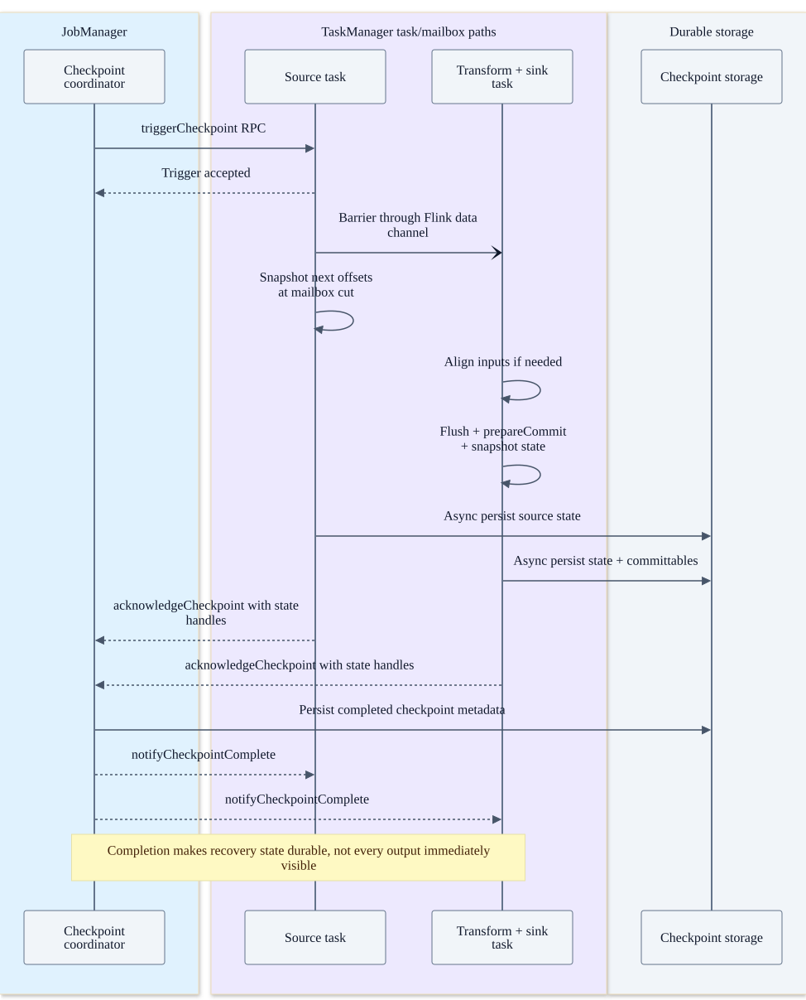
At CP42 the mailbox establishes a consistent cut. The task’s pre-barrier hooks flush/prepare sink work, the barrier is broadcast, operator snapshots are initiated, and asynchronous snapshot futures are finalized. For aligned checkpoints, multi-input tasks wait for the matching barriers without letting post-barrier data overtake the cut. Unaligned checkpoints can include in-flight channel state instead; they do not eliminate snapshot I/O or sink commit work.
Only after required task and coordinator state is available and the completed checkpoint is stored does Flink issue completion notifications. Checkpoint files must be on durable storage reachable by replacement processes, with appropriate HA metadata/recovery configuration. A local temporary directory inside a lost pod is not sufficient for cluster recovery.
Conceptual CP42 contents (not the exact serialized class layout):
source: orders/P0 -> next offset 105
operator: customer-7 total -> 250 at the same logical cut
sink: recoverable transaction/committable identity T42
coordinator: source split-assignment state
optional: channel state for an unaligned checkpointCompleted checkpoint to externally visible output
Healthy KafkaSink commit path. The group-offset commit is independent bookkeeping. EndTxn success confirms the coordinator decision; control markers and the partition LSO govern read_committed visibility.
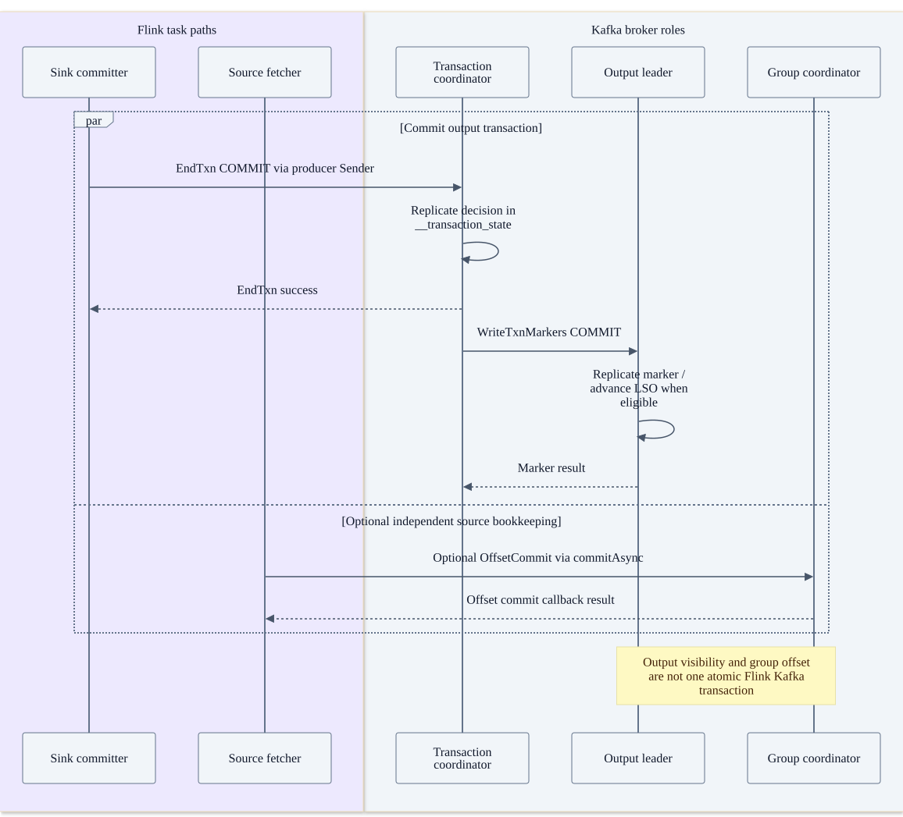
There are two different after-checkpoint actions: the sink commits output T42, and the source may commit offset 105 to __consumer_offsets. Standard KafkaSource → KafkaSink does not call sendOffsetsToTransaction to place both actions in one Kafka transaction. Flink’s durable checkpoint plus sink recovery protocol is the cross-system link.
Kafka’s transaction coordinator persists its decision in __transaction_state and sends WriteTxnMarkers to participant partition leaders. An EndTxn success response does not mean every marker has finished replicating. read_committed Fetch is bounded by the last stable offset; an earlier open transaction can hold visibility back. Aborted transaction batches remain log history but are filtered from read_committed application delivery. read_uncommitted can expose transactional records before their final outcome.
Version caveat: older transaction sequences explicitly register partitions via AddPartitionsToTxn; newer transaction protocol versions integrate more partition registration/verification into Produce. Neither sequence implies that every application record causes its own AddPartitionsToTxn RPC. Use the catalog’s versioned schemas and the negotiated client/broker feature level.
8. Put every piece of state in the correct store
Four stores answer four different questions
A Kafka topic is not a pod. Its partitions and replicas live across broker logs. A Flink keyed-state backend is not Kafka Streams’ changelog topic. The JobManager manages handles/metadata, not all workers’ state bytes.
| State | Primary owner / durable location | Recovery / caveat |
|---|---|---|
| Input/output events | Kafka user-topic partition replica logs | Replay retained input after restore. Topic retention/deletion can remove required recovery history. |
| Consumer group offsets/membership | Group coordinator; __consumer_offsets | External progress and group protocol state. Not the authoritative Flink checkpoint source position. |
| Transaction decisions | Transaction coordinator; __transaction_state | Reload coordinator state and finish/retry decisions and markers. Transaction timeout and producer fencing still matter. |
| Commit/abort markers + producer sequence state | Participant partition logs plus local recovery metadata | Detect duplicate producer retries and compute transactional visibility. Idempotent producer identity is not a global business-key deduplication database. |
| Cluster metadata | KRaft metadata log and snapshots | Broker/controller registrations, topic/partition assignments and leadership. Separate from user record logs and Flink checkpoints. |
| Live keyed/operator state | TaskManager configured state backend: e.g. heap or RocksDB working state | Low-latency local access; durable snapshots/changelog mechanisms depend on backend. Losing local files is recoverable only with usable remote state. |
| Flink source splits and sink committables | Checkpoint state + completed checkpoint metadata/handles | Restore to the same logical cut, then recover sink commits. JobManager is not the sole holder of all state bytes. |
| Kafka Streams local stores | Streams application plus changelog/repartition topics when configured | Different runtime from Flink; do not draw an automatic Kafka changelog topic for every Flink keyed state. |
| Kafka Connect metadata | Distributed worker config, offset and status topics | Different runtime from KafkaSource. Source/sink task delivery depends on the connector and mode. |
| Share delivery state | Share coordinator; share state internal storage | Different acknowledgement model from ordinary KafkaSource offsets. This chapter does not apply share-group transactional designs to the normal source. |
9. Failure cases: what fails, what survives, what gets retried
Failure after checkpoint completion but before commit reply
Illustrative recoverable case: CP42 is durable and T42 has not timed out. Retrying the same transaction is not resending its business records in a new transaction. Unknown/fatal commit outcomes must not be silently ignored.
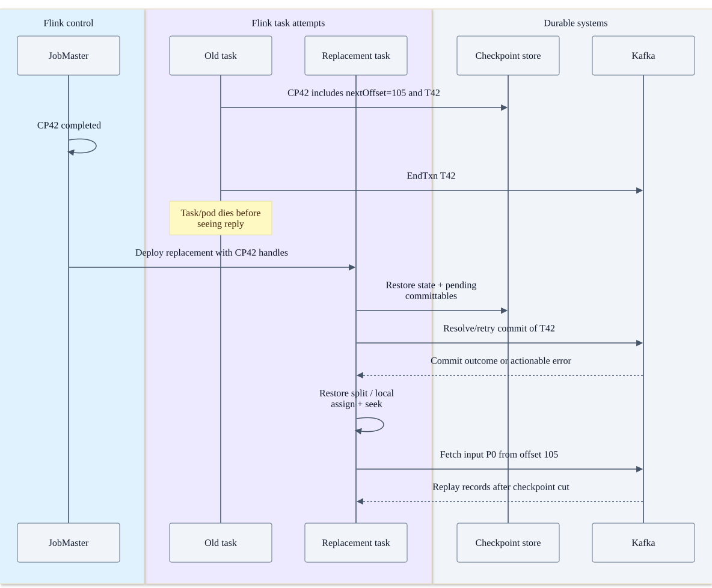
| Failure point | Recovery / distributed response | Boundary or risk |
|---|---|---|
| Produce reply lost after append | Client retries; idempotent producer identity/epoch/sequence suppresses applicable duplicate retries. | A timeout is ambiguous. Non-idempotent retries or resending the business event using a new identity can duplicate it. |
| Input partition leader dies | Controller chooses an eligible leader; clients refresh metadata/epochs and reconnect. | Availability depends on surviving replicas and election policy. Unclean election trades availability for possible data loss. |
| ISR drops below minimum | acks=all writes fail/wait according to the request and ISR state; replicas must catch up or policy must change. | Lowering minimum ISR is a durability tradeoff, not a harmless timeout fix. |
| One controller fails | A healthy metadata quorum can elect/continue with a majority. | Losing the quorum blocks metadata decisions. Existing data service may continue temporarily, but failover/control operations are impaired; do not promise indefinite availability. |
| Source reader dies before CP42 completes | Restart affected execution region/job according to strategy; restore last completed checkpoint CP41 and replay retained input. | Fetched/emitted records beyond CP41 can be processed again. Exactly-once does not mean the map function runs once. |
| Transform throws / deserialization fails | Fail task and recover according to restart strategy unless application explicitly routes the error. | A deterministic poison record can fail every retry. Dropping it or using a dead-letter path changes application semantics and must be designed. |
| Sink write fails before snapshot ACK | Async producer failure reaches writer/flush; checkpoint cannot safely certify that sink work. | Do not swallow producer callbacks or mark a failed write as successful. |
| Crash after output write but before checkpoint completion | Restore prior completed cut; abort/fence lingering uncommitted work as supported; replay input. | read_committed hides abandoned transactions. At-least-once nontransactional output may already be visible and can duplicate. |
| Crash after checkpoint completion before commit finishes | Restore pending committables and retry/recover the same transaction. | Requires retained checkpoint and viable transaction state. Fatal/expired/fenced transactions are not magically converted into successful commits. |
| Checkpoint storage unavailable | Checkpoint attempts fail/time out; processing may continue until configured failure tolerance/restart policy intervenes. | Exactly-once sink visibility can lag, state/transactions accumulate and recovery age grows. |
| Transaction times out during long outage | Kafka may abort; recovered committer can encounter fencing/invalid state and fail. | Size transaction timeout for checkpoint duration plus expected recovery window, within broker limits; no finite timeout tolerates an unlimited outage. |
| Optional source OffsetCommit fails after CP42 | Log/metric records failure; Flink still restores from CP42 split state. | External lag/group offsets may be stale. Do not rewind checkpoint recovery to that stale external offset. |
| TaskManager pod/node disappears | Heartbeat loss → scheduler failover → replacement slots → restore state. | All tasks in that process fail together; multiple pods on one node can fail together. Spare capacity and state-transfer speed determine recovery latency. |
| JobManager process disappears | With HA, new leader retrieves job/checkpoint metadata, fences old leadership and recovers tasks. | Kubernetes restarting a container alone does not guarantee that durable HA metadata and checkpoints were configured. |
| Input retention expires before restore | Checkpoint points before available log start; initialization/reset policy or explicit failure applies. | Cannot reconstruct deleted history. Silent offset reset can lose business data. |
| Slow downstream sink / hot key | Output buffers fill, credits disappear, mailbox/fetch progress slows, lag grows upstream. | This is backpressure, not necessarily network failure. More source parallelism cannot split one indivisible hot key’s state update. |
10. Throughput, latency, durability and availability tradeoffs
| Design lever | Benefit | Cost / diagnostic question |
|---|---|---|
| Larger producer batches / linger / compression | Fewer requests, better compression and amortized I/O. | More waiting/memory/CPU; distinguish client enqueue latency from broker ACK latency and committed visibility latency. |
| Fetch min bytes / max wait / batch size | Amortize request overhead and move more bytes per fetch. | Low-volume streams may wait longer; large batches increase queue memory and per-turn work. |
| More topic partitions / Flink parallelism | More independent leaders/readers/key groups and greater aggregate capacity. | More metadata, connections, files and state redistribution. Small keys/partitions can skew; too many idle tasks add overhead. |
| Operator chaining | Avoid network serialization, queues and scheduling between compatible operators. | Shared blocking/CPU/failure behavior; fewer independent scaling boundaries. |
| Separate tasks/pods | Independent resource placement and some failure isolation. | Serialization, network buffers, RTT and operational cost. More pods do not automatically create more useful parallel work. |
| Higher replication / stricter ISR | More resilience to replica loss and stronger acknowledgement requirements. | More network/disk work and potentially lower write availability when replicas lag. |
| Short checkpoint interval | Younger recovery point and often earlier transactional output publication. | More state I/O, coordination and transactions. Under load, duration/alignment may dominate the configured interval. |
| Unaligned checkpoints | Can reduce alignment delay under backpressure. | Snapshots include in-flight channel data; more checkpoint/storage/recovery I/O. Does not make a slow sink fast. |
| Larger queues/buffers | Absorb bursts and improve batching. | More memory, tail latency and volatile in-flight work. Buffers delay overload; they do not fix sustained arrival rate above service rate. |
| Local embedded state vs remote checkpoint storage | Local state is fast; remote durable state makes worker replacement possible. | Serialization/upload/download overhead and recovery duration; incremental snapshots reduce some transfer, not all metadata work. |
| Exactly-once transactional sink | Hide aborted/replayed attempts from read_committed readers. | Commit coordination, timeout management and visibility delay. At-least-once + business-key deduplication is a different design with different costs. |
Analytical model — estimates, not benchmark results:
visible latency ≈ source wait + compute + queues + sink batching
+ wait for checkpoint completion + transaction visibility delay
recovery time ≈ failure detection + scheduling + state restore + replay/catch-up
stable system requires sustained arrival rate < bottleneck service rate
replay work depends on retained input after the last completed checkpointMeasure each term. Useful views include producer queue/request latency and retries; broker request queue/local/remote time and under-replicated partitions; Flink busy/backpressured/idle time, checkpoint duration/alignment/state size and failed checkpoints; source lag and sink errors. Metric names/labels vary by version and reporter. No numeric throughput or latency guarantee was measured for this chapter.
11. What changes if the sink is not Kafka?
| Sink contract | What must be coordinated | What cannot be assumed |
|---|---|---|
| Kafka transactional sink | Checkpointed committable → transaction decision → partition markers → read_committed visibility. | The output transaction does not atomically include Flink source group offsets. |
| Transactional database connector | Checkpoint-linked transaction/precommit handle and recoverable commit, subject to database/connector support. | A JDBC insert acknowledged once is not by itself end-to-end exactly-once. |
| Idempotent upsert/deduplicating sink | Stable business key or event ID with well-defined update/dedup semantics. | Producer idempotence does not deduplicate arbitrary HTTP side effects or repeated application-generated events. |
| Lakehouse table sink (e.g. Iceberg) | Write data/delete files, then publish table metadata/snapshot using the connector’s commit protocol. | Object file upload is not the table commit point; abandoned files and commit retries need handling. |
| Arbitrary HTTP/email side effect in map | External idempotency key/outbox/transactional design if duplicates matter. | Flink checkpoint rollback cannot unsend an email or undo an uncoordinated external call. |
For table commit detail, continue with Iceberg storage and commits. For broad guarantee comparisons, see delivery and recovery. This chapter makes exact connector-code claims for KafkaSink; the other rows are design contracts, not validation of an installed database/lakehouse connector.
12. How to check the real deployment instead of guessing
| Question to investigate | Read-only evidence to collect |
|---|---|
| Which processes are in which pods? | Kubernetes pod/container listing, node placement, command/args, controller owner and image versions. Do not copy environment variables or secrets into notes. |
| Which operators share a task? | Flink Web UI job graph, chained operator labels, subtask-to-TaskManager mapping and actual job plan. Source and sink parallelism alone do not show placement. |
| Which thread is busy? | TaskManager thread dump: task/mailbox threads, SplitFetcher, kafka-producer-network-thread and Netty threads. Names are diagnostic hints, not a stable ABI. |
| Where does each connection go? | Advertised Kafka metadata and FindCoordinator result; Flink RPC/data configuration; network policy and socket telemetry. Bootstrap success is insufficient. |
| What is durable? | Last completed checkpoint and storage location/retention, HA metadata, broker replica/ISR state, persistent volume/failure-domain placement. |
| Why is output not visible? | Checkpoint completion, pending committables, transaction outcome/timeout, output partition LSO and downstream isolation.level. Distinguish “not produced” from “produced but not committed.” |
No Kubernetes cluster, running job, pod layout, network capture or fault-injection experiment was inspected for this addition. Pod diagrams are explicitly illustrative. Implementation behavior is source-backed at the pinned revisions below, not a report of your deployed cluster.
13. Source trail, code excerpts and validation limits
The source and test links below are pinned to the inspected commits. Expand a component to see its class/module, exact file and line-numbered excerpt. These are three separately inspected repository revisions: the connector POM declares a Flink 2.2.1 / kafka-clients 4.2.0 baseline, so the Kafka HEAD schema catalog is not a claim that every API/version is emitted by that connector client or enabled by every cluster.
Tests were read/located as evidence, not executed against Kafka/Flink for this documentation change. The documentation generator, schema completeness, internal links, diagrams and browser behavior are validated separately. Full API schema data and Apache attribution are included in the RPC atlas.
| Repository | Inspected commit |
|---|---|
| Kafka | d2da6a18f839ce8b2eeb4db8e7515200258b0f81 |
| flink | 07805482705f4b703cd19517ecedf12014b7b762 |
| flink-connector-kafka | ae656dd6fe23f19f2e7e79cacd2d5e0341f3706b |
k-producer · KafkaProducer.java:478
KafkaProducer starts a Sender network thread; send appends to the producer accumulator.
Kafka/clients/src/main/java/org/apache/kafka/clients/producer/KafkaProducer.java · d2da6a18f839
476 String ioThreadName = NETWORK_THREAD_PREFIX + " | " + clientId;
477 this.ioThread = new Sender.SenderThread(ioThreadName, this.sender, true);
478 this.ioThread.start();
479 config.logUnused();
480 AppInfoParser.registerAppInfo(JMX_PREFIX, clientId, metrics, time.milliseconds());
481 log.debug("Kafka producer started");
482 } catch (Throwable t) {
483 // call close methods if internal objects are already constructed this is to prevent resource leak. see KAFKA-2121
484 close(Duration.ofMillis(0), true);
485 // now propagate the exception
486 throw new KafkaException("Failed to construct kafka producer", t);
487 }
488 }
489
490 // visible for testing
491 KafkaProducer(ProducerConfig config,
492 LogContext logContext,
493 Metrics metrics,
494 Serializer<K> keySerializer,
495 Serializer<V> valueSerializer,k-socket · SocketServer.scala:899
Processor loops over selector I/O and completed receives/sends.
Kafka/core/src/main/scala/kafka/network/SocketServer.scala · d2da6a18f839
897 configureNewConnections()
898 // register any new responses for writing
899 processNewResponses()
900 poll()
901 processCompletedReceives()
902 processCompletedSends()
903 processDisconnected()
904 closeExcessConnections()
905 } catch {
906 // We catch all the throwables here to prevent the processor thread from exiting. We do this because
907 // letting a processor exit might cause a bigger impact on the broker. This behavior might need to be
908 // reviewed if we see an exception that needs the entire broker to stop. Usually the exceptions thrown would
909 // be either associated with a specific socket channel or a bad request. These exceptions are caught and
910 // processed by the individual methods above which close the failing channel and continue processing other
911 // channels. So this catch block should only ever see ControlThrowables.
912 case e: Throwable => processException("Processor got uncaught exception.", e)
913 }
914 }
915 } finally {
916 debug(s"Closing selector - processor $id")k-handler · KafkaRequestHandler.scala:162
Request-handler threads dispatch requests to the API implementation.
Kafka/core/src/main/scala/kafka/server/KafkaRequestHandler.scala · d2da6a18f839
160 }
161
162 case request: Request =>
163 try {
164 request.requestDequeueTimeNanos(endTime)
165 trace(s"Kafka request handler $id on broker $brokerId handling request $request")
166 threadCurrentRequest.set(request)
167 apis.handle(request, requestLocal)
168 } catch {
169 case e: FatalExitError =>
170 completeShutdown()
171 Exit.exit(e.statusCode)
172 case e: Throwable => error("Exception when handling request", e)
173 } finally {
174 threadCurrentRequest.remove()
175 request.releaseBuffer()
176 }
177
178 case _: WakeupRequest =>
179 // We should handle this in receiveRequest by polling callbackQueue.k-produce · KafkaApis.scala:547
Produce routes to replica management after authorization/record checks.
Kafka/core/src/main/scala/kafka/server/KafkaApis.scala · d2da6a18f839
545 val transactionSupportedOperation = AddPartitionsToTxnManager.produceRequestVersionToTransactionSupportedOperation(request.header.apiVersion())
546 // call the replica manager to append messages to the replicas
547 replicaManager.handleProduceAppend(
548 timeout = produceRequest.timeout.toLong,
549 requiredAcks = produceRequest.acks,
550 internalTopicsAllowed = internalTopicsAllowed,
551 transactionalId = produceRequest.transactionalId,
552 entriesPerPartition = authorizedRequestInfo,
553 responseCallback = sendResponseCallback,
554 recordValidationStatsCallback = processingStatsCallback,
555 requestLocal = requestLocal,
556 transactionSupportedOperation = transactionSupportedOperation)
557
558 // if the request is put into the purgatory, it will have a held reference and hence cannot be garbage collected;
559 // hence we clear its data here in order to let GC reclaim its memory since it is already appended to log
560 produceRequest.clearPartitionRecords()
561 }
562 }
563
564 /**k-fetch · KafkaApis.scala:773
Fetch uses replica management with fetch isolation/limits.
Kafka/core/src/main/scala/kafka/server/KafkaApis.scala · d2da6a18f839
771
772 // call the replica manager to fetch messages from the local replica
773 replicaManager.fetchMessages(
774 params = params,
775 fetchInfos = interesting,
776 quota = replicationQuota(fetchRequest),
777 responseCallback = processResponseCallback,
778 )
779 }
780 }
781
782 def replicationQuota(fetchRequest: FetchRequest): ReplicaQuota =
783 if (fetchRequest.isFromFollower) quotas.leader else UNBOUNDED_QUOTA
784
785 def handleListOffsetRequest(request: Request): Unit = {
786 val correlationId = request.header.correlationId
787 val clientId = request.header.clientId
788 val offsetRequest = request.body(classOf[ListOffsetsRequest])
789 val version = request.header.apiVersion
790 k-isr · Partition.scala:1234
acks=all enforces the minimum ISR before append.
Kafka/core/src/main/scala/kafka/cluster/Partition.scala · d2da6a18f839
1232
1233 // Avoid writing to leader if there are not enough insync replicas to make it safe
1234 if (inSyncSize < minIsr && requiredAcks == -1) {
1235 throw new NotEnoughReplicasException(s"The size of the current ISR : $inSyncSize " +
1236 s"is insufficient to satisfy the min.isr requirement of $minIsr for partition $topicPartition, " +
1237 s"live replica(s) broker.id are : $inSyncReplicaIds")
1238 }
1239
1240 val info = leaderLog.appendAsLeader(records, this.leaderEpoch, origin, requestLocal, verificationGuard, transactionVersion)
1241
1242 // we may need to increment high watermark since ISR could be down to 1
1243 (info, maybeIncrementLeaderHW(leaderLog))
1244
1245 case None =>
1246 throw new NotLeaderOrFollowerException("Leader not local for partition %s on broker %d"
1247 .format(topicPartition, localBrokerId))
1248 }
1249 })
1250
1251 info.copy(if (leaderHWIncremented) LeaderHwChange.INCREASED else LeaderHwChange.SAME)k-delayed · ReplicaManager.scala:903
Replication waits use delayed operations and callbacks.
Kafka/core/src/main/scala/kafka/server/ReplicaManager.scala · d2da6a18f839
901 }
902
903 val delayedProduce = new DelayedProduce(timeoutMs, initialProduceStatus.asJava, delegate, responseCallback.asJava)
904
905 // create a list of (topic, partition) pairs to use as keys for this delayed produce operation
906 val producerRequestKeys = entriesPerPartition.keys.map(new TopicPartitionOperationKey(_)).toList
907
908 // try to complete the request immediately, otherwise put it into the purgatory
909 // this is because while the delayed produce operation is being created, new
910 // requests may arrive and hence make this operation completable.
911 delayedProducePurgatory.tryCompleteElseWatch(delayedProduce, producerRequestKeys.asJava)
912 } else {
913 // we can respond immediately
914 val produceResponseStatus = new util.HashMap[TopicIdPartition, PartitionResponse]
915 initialProduceStatus.foreach { case (k, status) => produceResponseStatus.put(k, status.responseStatus) }
916 responseCallback(produceResponseStatus)
917 }
918 }
919
920 private def sendInvalidRequiredAcksResponse(k-log · UnifiedLog.java:1286
Append and flush policy are separate; replication ACK is not a per-record fsync receipt.
Kafka/storage/src/main/java/org/apache/kafka/storage/internals/log/UnifiedLog.java · d2da6a18f839
1284 appendInfo.lastOffset(), appendInfo.firstOffset(), localLog.logEndOffset(), validRecords);
1285
1286 if (localLog.unflushedMessages() >= config().flushInterval) flush(false);
1287 }
1288 return appendInfo;
1289 });
1290 }
1291 }
1292 }
1293
1294 public void assignEpochStartOffset(int leaderEpoch, long startOffset) {
1295 leaderEpochCache.assign(leaderEpoch, startOffset);
1296 }
1297
1298 public Optional<Integer> latestEpoch() {
1299 return leaderEpochCache.latestEpoch();
1300 }
1301
1302 public Optional<OffsetAndEpoch> endOffsetForEpoch(int leaderEpoch) {
1303 Map.Entry<Integer, Long> entry = leaderEpochCache.endOffsetFor(leaderEpoch, logEndOffset());k-lso · UnifiedLog.java:678
Last stable offset limits transactionally visible reads.
Kafka/storage/src/main/java/org/apache/kafka/storage/internals/log/UnifiedLog.java · d2da6a18f839
676 * beyond the high watermark.
677 */
678 public long lastStableOffset() {
679 // cache the first unstable offset metadata to avoid a concurrent update breaking the isPresent check
680 Optional<LogOffsetMetadata> firstUnstableOffsetMetadataCopy = firstUnstableOffsetMetadata;
681 if (firstUnstableOffsetMetadataCopy.isPresent() && firstUnstableOffsetMetadataCopy.get().messageOffset < highWatermark()) {
682 return firstUnstableOffsetMetadataCopy.get().messageOffset;
683 } else {
684 return highWatermark();
685 }
686 }
687
688 public long lastStableOffsetLag() {
689 return highWatermark() - lastStableOffset();
690 }
691
692 /**
693 * Fully materialize and return an offset snapshot including segment position info. This method will update
694 * the LogOffsetMetadata for the high watermark and last stable offset if they are message-only. Throws an
695 * offset out of range error if the segment info cannot be loaded.k-endtxn · TransactionCoordinator.scala:677
EndTxn can reply before transaction markers finish propagating.
Kafka/core/src/main/scala/kafka/coordinator/transaction/TransactionCoordinator.scala · d2da6a18f839
675
676 case Right((txnMetadata, newPreSendMetadata)) =>
677 // we can respond to the client immediately and continue to write the txn markers if
678 // the log append was successful
679 responseCallback(Errors.NONE, RecordBatch.NO_PRODUCER_ID, RecordBatch.NO_PRODUCER_EPOCH)
680
681 txnMarkerChannelManager.addTxnMarkersToSend(coordinatorEpoch, txnMarkerResult, txnMetadata, newPreSendMetadata)
682 }
683 } else {
684 info(s"Aborting sending of transaction markers and returning $error error to client for $transactionalId's EndTransaction request of $txnMarkerResult, " +
685 s"since appending $newMetadata to transaction log with coordinator epoch $coordinatorEpoch failed")
686
687 if (isEpochFence) {
688 txnManager.getTransactionState(transactionalId).foreach {
689 case None =>
690 warn(s"The coordinator still owns the transaction partition for $transactionalId, but there is " +
691 s"no metadata in the cache; this is not expected")
692
693 case Some(epochAndMetadata) =>
694 if (epochAndMetadata.coordinatorEpoch == coordinatorEpoch) {k-roles · KafkaRaftServer.scala:76
process.roles selects broker/controller components in a server process.
Kafka/core/src/main/scala/kafka/server/KafkaRaftServer.scala · d2da6a18f839
74 )
75
76 private val broker: Option[BrokerServer] = if (config.processRoles.contains(ProcessRole.BrokerRole)) {
77 Some(new BrokerServer(sharedServer))
78 } else {
79 None
80 }
81
82 private val controller: Option[ControllerServer] = if (config.processRoles.contains(ProcessRole.ControllerRole)) {
83 Some(new ControllerServer(
84 sharedServer,
85 KafkaRaftServer.configSchema,
86 bootstrapMetadata,
87 ))
88 } else {
89 None
90 }
91
92 override def startup(): Unit = {
93 Mx4jLoader.maybeLoad()k-broker · BrokerServer.scala:409
Coordinator components are instantiated in the broker, not automatically separate pods.
Kafka/core/src/main/scala/kafka/server/BrokerServer.scala · d2da6a18f839
407 partitionMetadataClient = createPartitionMetadataClient(metadataCache)
408
409 groupCoordinator = createGroupCoordinator()
410
411 val producerIdManagerSupplier = () => ProducerIdManager.rpc(
412 config.brokerId,
413 time,
414 () => lifecycleManager.brokerEpoch,
415 clientToControllerChannelManager
416 )
417
418 // Create transaction coordinator, but don't start it until we've started replica manager.
419 // Hardcode Time.SYSTEM for now as some Streams tests fail otherwise, it would be good to fix the underlying issue
420 transactionCoordinator = TransactionCoordinator(config, replicaManager,
421 new KafkaScheduler(1, true, "transaction-log-manager-"),
422 producerIdManagerSupplier, metrics, metadataCache, Time.SYSTEM)
423
424 autoTopicCreationManager = new DefaultAutoTopicCreationManager(
425 config,
426 () => groupCoordinator.groupMetadataTopicConfigs,k-headers · ApiMessageTypeGenerator.java:346
Generated header-version selection includes the ApiVersions response-header exception.
Kafka/generator/src/main/java/org/apache/kafka/message/ApiMessageTypeGenerator.java · d2da6a18f839
344 }
345
346 private void generateHeaderVersion(String type) {
347 buffer.printf("public short %sHeaderVersion(short _version) {%n", type);
348 buffer.incrementIndent();
349 buffer.printf("switch (apiKey) {%n");
350 buffer.incrementIndent();
351 for (Map.Entry<Short, ApiData> entry : apis.entrySet()) {
352 short apiKey = entry.getKey();
353 ApiData apiData = entry.getValue();
354 String name = apiData.name();
355
356 MessageSpec spec = messageSpec(type, apiKey, entry.getValue());
357 if (!spec.hasValidVersion())
358 continue;
359
360 buffer.printf("case %d: // %s%n", apiKey, MessageGenerator.capitalizeFirst(name));
361 buffer.incrementIndent();
362 if (type.equals("response") && apiKey == 18) {
363 buffer.printf("// ApiVersionsResponse always includes a v0 header.%n");k-record · DefaultRecordBatch.java:104
Record-batch header is a separate binary structure inside Records.
Kafka/clients/src/main/java/org/apache/kafka/common/record/internal/DefaultRecordBatch.java · d2da6a18f839
102 */
103 public class DefaultRecordBatch extends AbstractRecordBatch implements MutableRecordBatch {
104 static final int BASE_OFFSET_OFFSET = 0;
105 static final int BASE_OFFSET_LENGTH = 8;
106 static final int LENGTH_OFFSET = BASE_OFFSET_OFFSET + BASE_OFFSET_LENGTH;
107 static final int LENGTH_LENGTH = 4;
108 static final int PARTITION_LEADER_EPOCH_OFFSET = LENGTH_OFFSET + LENGTH_LENGTH;
109 static final int PARTITION_LEADER_EPOCH_LENGTH = 4;
110 static final int MAGIC_OFFSET = PARTITION_LEADER_EPOCH_OFFSET + PARTITION_LEADER_EPOCH_LENGTH;
111 static final int MAGIC_LENGTH = 1;
112 public static final int CRC_OFFSET = MAGIC_OFFSET + MAGIC_LENGTH;
113 static final int CRC_LENGTH = 4;
114 static final int ATTRIBUTES_OFFSET = CRC_OFFSET + CRC_LENGTH;
115 static final int ATTRIBUTE_LENGTH = 2;
116 public static final int LAST_OFFSET_DELTA_OFFSET = ATTRIBUTES_OFFSET + ATTRIBUTE_LENGTH;
117 static final int LAST_OFFSET_DELTA_LENGTH = 4;
118 static final int BASE_TIMESTAMP_OFFSET = LAST_OFFSET_DELTA_OFFSET + LAST_OFFSET_DELTA_LENGTH;
119 static final int BASE_TIMESTAMP_LENGTH = 8;
120 static final int MAX_TIMESTAMP_OFFSET = BASE_TIMESTAMP_OFFSET + BASE_TIMESTAMP_LENGTH;
121 static final int MAX_TIMESTAMP_LENGTH = 8;k-consumer · ConsumerDelegateCreator.java:57
Consumer implementation depends on group.protocol; do not assume identical internal I/O threads.
Kafka/clients/src/main/java/org/apache/kafka/clients/consumer/internals/ConsumerDelegateCreator.java · d2da6a18f839
55 public class ConsumerDelegateCreator {
56
57 public <K, V> ConsumerDelegate<K, V> create(ConsumerConfig config,
58 Deserializer<K> keyDeserializer,
59 Deserializer<V> valueDeserializer) {
60 try {
61 GroupProtocol groupProtocol = GroupProtocol.valueOf(config.getString(ConsumerConfig.GROUP_PROTOCOL_CONFIG).toUpperCase(Locale.ROOT));
62
63 if (groupProtocol == GroupProtocol.CONSUMER)
64 return new AsyncKafkaConsumer<>(config, keyDeserializer, valueDeserializer, Optional.empty());
65 else
66 return new ClassicKafkaConsumer<>(config, keyDeserializer, valueDeserializer);
67 } catch (KafkaException e) {
68 throw e;
69 } catch (Throwable t) {
70 throw new KafkaException("Failed to construct Kafka consumer", t);
71 }
72 }
73
74 public <K, V> ConsumerDelegate<K, V> create(LogContext logContext,f-pom · pom.xml:56
Connector build baseline is Flink 2.2.1 and kafka-clients 4.2.0; separately inspected HEADs are not a tested release bundle.
flink-connector-kafka/pom.xml · ae656dd6fe23
54 <!-- Main Dependencies -->
55 <confluent.version>7.9.2</confluent.version>
56 <flink.version>2.2.1</flink.version>
57 <kafka.version>4.2.0</kafka.version>
58
59 <!-- Other Dependencies -->
60 <avro.version>1.12.0</avro.version>
61 <byte-buddy.version>1.12.10</byte-buddy.version>
62 <commons-cli.version>1.9.0</commons-cli.version>
63 <commons-codec.version>1.18.0</commons-codec.version>
64 <commons-compress.version>1.27.1</commons-compress.version>
65 <commons-io.version>2.19.0</commons-io.version>
66 <commons-lang3.version>3.18.0</commons-lang3.version>
67 <httpcore.version>4.4.16</httpcore.version>
68 <httpclient.version>4.5.14</httpclient.version>
69 <jackson-bom.version>2.21.3</jackson-bom.version>
70 <javassist.version>3.30.2-GA</javassist.version>
71 <jsr305.version>1.3.9</jsr305.version>
72 <kryo.version>5.6.2</kryo.version>
73 <log4j.version>2.25.5</log4j.version>f-source · KafkaSource.java:160
Reader creation wires queue, split-reader supplier, fetcher manager and record emitter.
flink-connector-kafka/flink-connector-kafka/src/main/java/org/apache/flink/connector/kafka/source/KafkaSource.java · ae656dd6fe23
158 SourceReaderContext readerContext, Consumer<Collection<String>> splitFinishedHook)
159 throws Exception {
160 FutureCompletingBlockingQueue<RecordsWithSplitIds<ConsumerRecord<byte[], byte[]>>>
161 elementsQueue = new FutureCompletingBlockingQueue<>();
162 deserializationSchema.open(
163 new DeserializationSchema.InitializationContext() {
164 @Override
165 public MetricGroup getMetricGroup() {
166 return readerContext.metricGroup().addGroup("deserializer");
167 }
168
169 @Override
170 public UserCodeClassLoader getUserCodeClassLoader() {
171 return readerContext.getUserCodeClassLoader();
172 }
173 });
174 final KafkaSourceReaderMetrics kafkaSourceReaderMetrics =
175 new KafkaSourceReaderMetrics(readerContext.metricGroup());
176
177 Supplier<KafkaPartitionSplitReader> splitReaderSupplier =f-enum · KafkaSourceEnumerator.java:255
Enumerator discovers partitions through async callbacks and owns split assignment.
flink-connector-kafka/flink-connector-kafka/src/main/java/org/apache/flink/connector/kafka/source/enumerator/KafkaSourceEnumerator.java · ae656dd6fe23
253 */
254 @Override
255 public void start() {
256 adminClient = getKafkaAdminClient();
257
258 // Find splits where the start offset has been initialized but not yet assigned to readers.
259 // These splits must not be reinitialized to keep offsets consistent with first discovery.
260 final List<KafkaPartitionSplit> preinitializedSplits =
261 unassignedSplits.values().stream()
262 .filter(split -> !split.isMigrated())
263 .collect(Collectors.toList());
264 if (!preinitializedSplits.isEmpty()) {
265 addPartitionSplitChangeToPendingAssignments(preinitializedSplits);
266 }
267
268 if (topicIntegrityCheckEnabled && subscriber instanceof TopicMetadataSettable) {
269 ((TopicMetadataSettable) subscriber).setTopicMetadataProvider(topicIntegrityProvider);
270 }
271
272 if (partitionDiscoveryIntervalMs > 0) {f-assign · KafkaPartitionSplitReader.java:262
Kafka partitions are explicitly assigned; ordinary KafkaSource does not use group subscription assignment.
flink-connector-kafka/flink-connector-kafka/src/main/java/org/apache/flink/connector/kafka/source/reader/KafkaPartitionSplitReader.java · ae656dd6fe23
260 // Assign new partitions.
261 newPartitionAssignments.addAll(consumer.assignment());
262 consumer.assign(newPartitionAssignments);
263
264 // Seek on the newly assigned partitions to their stating offsets.
265 seekToStartingOffsets(
266 consumer,
267 partitionsStartingFromEarliest,
268 partitionsStartingFromLatest,
269 partitionsStartingFromSpecifiedOffsets);
270 // Setup the stopping offsets.
271 acquireAndSetStoppingOffsets(
272 consumer, partitionsStoppingAtLatest, partitionsStoppingAtCommitted);
273
274 // After acquiring the starting and stopping offsets, remove the empty splits if necessary.
275 removeEmptySplits(consumer);
276
277 maybeLogSplitChangesHandlingResult(consumer, splitsChange);
278 }
279 f-poll · KafkaPartitionSplitReader.java:153
SplitReader polls Kafka on the fetcher path.
flink-connector-kafka/flink-connector-kafka/src/main/java/org/apache/flink/connector/kafka/source/reader/KafkaPartitionSplitReader.java · ae656dd6fe23
151
152 @Override
153 public RecordsWithSplitIds<ConsumerRecord<byte[], byte[]>> fetch() throws IOException {
154 final KafkaConsumer<byte[], byte[]> consumer = ensureConsumer();
155 ConsumerRecords<byte[], byte[]> consumerRecords;
156 try {
157 consumerRecords = consumer.poll(pollTimeout);
158 } catch (WakeupException | IllegalStateException e) {
159 // IllegalStateException will be thrown if the consumer is not assigned any partitions.
160 // This happens if all assigned partitions are invalid or empty (starting offset >=
161 // stopping offset). We just mark empty partitions as finished and return an empty
162 // record container, and this consumer will be closed by SplitFetcherManager.
163 KafkaPartitionSplitRecords recordsBySplits =
164 new KafkaPartitionSplitRecords(
165 ConsumerRecords.empty(), kafkaSourceReaderMetrics);
166 markEmptySplitsAsFinished(recordsBySplits);
167 return recordsBySplits;
168 }
169 KafkaPartitionSplitRecords recordsBySplits =
170 new KafkaPartitionSplitRecords(consumerRecords, kafkaSourceReaderMetrics);f-emit · KafkaRecordEmitter.java:53
Checkpointable next offset advances only after deserialize/emit.
flink-connector-kafka/flink-connector-kafka/src/main/java/org/apache/flink/connector/kafka/source/reader/KafkaRecordEmitter.java · ae656dd6fe23
51 sourceOutputWrapper.setSourceOutput(output);
52 sourceOutputWrapper.setTimestamp(consumerRecord.timestamp());
53 deserializationSchema.deserialize(consumerRecord, sourceOutputWrapper);
54 splitState.setCurrentOffset(consumerRecord.offset() + 1);
55 } catch (Exception e) {
56 throw new IOException("Failed to deserialize consumer record due to", e);
57 }
58 }
59
60 private static class SourceOutputWrapper<T> implements Collector<T> {
61
62 private SourceOutput<T> sourceOutput;
63 private long timestamp;
64
65 @Override
66 public void collect(T record) {
67 sourceOutput.collect(record, timestamp);
68 }
69
70 @Overridef-reader · KafkaSourceReader.java:98
Source snapshot stores next-offset splits, independently of Kafka group-offset commits.
flink-connector-kafka/flink-connector-kafka/src/main/java/org/apache/flink/connector/kafka/source/reader/KafkaSourceReader.java · ae656dd6fe23
96
97 @Override
98 public List<KafkaPartitionSplit> snapshotState(long checkpointId) {
99 List<KafkaPartitionSplit> splits = super.snapshotState(checkpointId);
100 if (!commitOffsetsOnCheckpoint) {
101 return splits;
102 }
103
104 if (splits.isEmpty() && offsetsOfFinishedSplits.isEmpty()) {
105 offsetsToCommit.put(checkpointId, Collections.emptyMap());
106 } else {
107 Map<TopicPartition, OffsetAndMetadata> offsetsMap =
108 offsetsToCommit.computeIfAbsent(checkpointId, id -> new HashMap<>());
109 // Put the offsets of the active splits.
110 for (KafkaPartitionSplit split : splits) {
111 // If the checkpoint is triggered before the partition starting offsets
112 // is retrieved, do not commit the offsets for those partitions.
113 if (split.getStartingOffset() >= 0) {
114 offsetsMap.put(
115 split.getTopicPartition(),f-offsetcommit · KafkaSourceReader.java:149
The connector explicitly states that an external offset-commit failure does not break recovery correctness.
flink-connector-kafka/flink-connector-kafka/src/main/java/org/apache/flink/connector/kafka/source/reader/KafkaSourceReader.java · ae656dd6fe23
147 committedPartitions,
148 (ignored, e) -> {
149 // The offset commit here is needed by the external monitoring. It won't
150 // break Flink job's correctness if we fail to commit the offset here.
151 if (e != null) {
152 kafkaSourceReaderMetrics.recordFailedCommit();
153 LOG.warn(
154 "Failed to commit consumer offsets for checkpoint {}",
155 checkpointId,
156 e);
157 } else {
158 LOG.debug(
159 "Successfully committed offsets for checkpoint {}",
160 checkpointId);
161 kafkaSourceReaderMetrics.recordSucceededCommit();
162 // If the finished topic partition has been committed, we remove it
163 // from the offsets of the finished splits map.
164 committedPartitions.forEach(
165 (tp, offset) ->
166 kafkaSourceReaderMetrics.recordCommittedOffset(f-fetchcommit · KafkaSourceFetcherManager.java:75
Offset commit work is enqueued to a split fetcher.
73 }
74
75 public void commitOffsets(
76 Map<TopicPartition, OffsetAndMetadata> offsetsToCommit, OffsetCommitCallback callback) {
77 LOG.debug("Committing offsets {}", offsetsToCommit);
78 if (offsetsToCommit.isEmpty()) {
79 return;
80 }
81 SplitFetcher<ConsumerRecord<byte[], byte[]>, KafkaPartitionSplit> splitFetcher =
82 fetchers.get(0);
83 if (splitFetcher != null) {
84 // The fetcher thread is still running. This should be the majority of the cases.
85 enqueueOffsetsCommitTask(splitFetcher, offsetsToCommit, callback);
86 } else {
87 splitFetcher = createSplitFetcher();
88 enqueueOffsetsCommitTask(splitFetcher, offsetsToCommit, callback);
89 startFetcher(splitFetcher);
90 }
91 }
92 f-base · SourceReaderBase.java:177
Source reader emits fetched records on the task thread.
flink/flink-connectors/flink-connector-base/src/main/java/org/apache/flink/connector/base/source/reader/SourceReaderBase.java · 07805482705f
175
176 @Override
177 public InputStatus pollNext(ReaderOutput<T> output) throws Exception {
178 // make sure we have a fetch we are working on, or move to the next
179 RecordsWithSplitIds<E> recordsWithSplitId = this.currentFetch;
180 if (recordsWithSplitId == null) {
181 recordsWithSplitId = getNextFetch(output);
182 if (recordsWithSplitId == null) {
183 return trace(finishedOrAvailableLater());
184 }
185 }
186 if (rateLimitingEnabled) {
187 return pollNextWithRateLimiting(recordsWithSplitId, output);
188 } else {
189 return pollNextWithoutRateLimiting(recordsWithSplitId, output);
190 }
191 }
192
193 private InputStatus pollNextWithoutRateLimiting(
194 RecordsWithSplitIds<E> recordsWithSplitId, ReaderOutput<T> output) throws Exception {f-chain · ChainingOutput.java:101
Chained output invokes the next operator in-process.
flink/flink-runtime/src/main/java/org/apache/flink/streaming/runtime/tasks/ChainingOutput.java · 07805482705f
99 }
100
101 protected <X> void pushToOperator(StreamRecord<X> record) {
102 try {
103 // we know that the given outputTag matches our OutputTag so the record
104 // must be of the type that our operator expects.
105 @SuppressWarnings("unchecked")
106 StreamRecord<T> castRecord = (StreamRecord<T>) record;
107
108 numRecordsOut.inc();
109 numRecordsIn.inc();
110 recordProcessor.accept(castRecord);
111 } catch (Exception e) {
112 throw new ExceptionInChainedOperatorException(e);
113 }
114 }
115
116 @Override
117 public void emitWatermark(Watermark mark) {
118 if (announcedStatus.isIdle()) {f-map · StreamMap.java:36
Map calls the user function and emits its result.
flink/flink-runtime/src/main/java/org/apache/flink/streaming/api/operators/StreamMap.java · 07805482705f
34
35 @Override
36 public void processElement(StreamRecord<IN> element) throws Exception {
37 output.collect(element.replace(userFunction.map(element.getValue())));
38 }
39 }
40 f-remote · RemoteInputChannel.java:387
Remote data channels request subpartitions from a TaskManager peer.
flink/flink-runtime/src/main/java/org/apache/flink/runtime/io/network/partition/consumer/RemoteInputChannel.java · 07805482705f
385 @VisibleForTesting
386 @Override
387 public void requestSubpartitions() throws IOException, InterruptedException {
388 if (partitionRequestClient == null) {
389 LOG.debug(
390 "{}: Requesting REMOTE subpartitions {} of partition {}. {}",
391 this,
392 consumedSubpartitionIndexSet,
393 partitionId,
394 channelStatePersister);
395 // Create a client and request the partition
396 try {
397 partitionRequestClient =
398 connectionManager.createPartitionRequestClient(connectionId);
399 } catch (IOException e) {
400 // IOExceptions indicate that we could not open a connection to the remote
401 // TaskExecutor
402 throw new PartitionConnectionException(partitionId, e);
403 }
404 f-local · LocalInputChannel.java:429
Co-located tasks use local input channels, not a TCP request for each record.
flink/flink-runtime/src/main/java/org/apache/flink/runtime/io/network/partition/consumer/LocalInputChannel.java · 07805482705f
427
428 @Override
429 protected void requestSubpartitions() throws IOException {
430 checkState(toBeConsumedBuffers.isEmpty());
431
432 boolean retriggerRequest = false;
433 boolean notifyDataAvailable = false;
434
435 // The lock is required to request only once in the presence of retriggered requests.
436 synchronized (requestLock) {
437 checkState(!isReleased, "LocalInputChannel has been released already");
438
439 if (subpartitionView == null) {
440 LOG.debug(
441 "{}: Requesting LOCAL subpartitions {} of partition {}. {}",
442 this,
443 consumedSubpartitionIndexSet,
444 partitionId,
445 channelStatePersister);
446 f-taskrpc · TaskExecutorGateway.java:147
Trigger RPC completion acknowledges initiation, not durable snapshot completion.
flink/flink-runtime/src/main/java/org/apache/flink/runtime/taskexecutor/TaskExecutorGateway.java · 07805482705f
145 * @return Future acknowledge if the checkpoint has been successfully triggered
146 */
147 CompletableFuture<Acknowledge> triggerCheckpoint(
148 ExecutionAttemptID executionAttemptID,
149 long checkpointID,
150 long checkpointTimestamp,
151 CheckpointOptions checkpointOptions);
152
153 /**
154 * Confirm a checkpoint for the given task. The checkpoint is identified by the checkpoint ID
155 * and the checkpoint timestamp.
156 *
157 * @param executionAttemptID identifying the task
158 * @param completedCheckpointId unique id for the completed checkpoint
159 * @param completedCheckpointTimestamp is the timestamp when the checkpoint has been initiated
160 * @param lastSubsumedCheckpointId unique id for the checkpoint to be subsumed
161 * @return Future acknowledge if the checkpoint has been successfully confirmed
162 */
163 CompletableFuture<Acknowledge> confirmCheckpoint(
164 ExecutionAttemptID executionAttemptID,f-ackrpc · CheckpointCoordinatorGateway.java:35
Durable checkpoint ACK carries attempt ID, checkpoint ID, metrics and task state handles.
flink/flink-runtime/src/main/java/org/apache/flink/runtime/checkpoint/CheckpointCoordinatorGateway.java · 07805482705f
33 public interface CheckpointCoordinatorGateway extends RpcGateway {
34
35 CompletableFuture<Acknowledge> acknowledgeCheckpoint(
36 final JobID jobID,
37 final ExecutionAttemptID executionAttemptID,
38 final long checkpointId,
39 final CheckpointMetrics checkpointMetrics,
40 @Nullable final SerializedValue<TaskStateSnapshot> subtaskState);
41
42 void declineCheckpoint(DeclineCheckpoint declineCheckpoint);
43
44 void reportCheckpointMetrics(
45 JobID jobID,
46 ExecutionAttemptID executionAttemptID,
47 long checkpointId,
48 CheckpointMetrics checkpointMetrics);
49
50 void reportInitializationMetrics(
51 JobID jobId,
52 ExecutionAttemptID executionAttemptId,f-barrier · SubtaskCheckpointCoordinatorImpl.java:351
Pre-barrier hooks precede barrier broadcast and snapshot finalization.
flink/flink-runtime/src/main/java/org/apache/flink/streaming/runtime/tasks/SubtaskCheckpointCoordinatorImpl.java · 07805482705f
349 // Step (1): Prepare the checkpoint, allow operators to do some pre-barrier work.
350 // The pre-barrier work should be nothing or minimal in the common case.
351 operatorChain.prepareSnapshotPreBarrier(metadata.getCheckpointId());
352
353 // Step (2): Send the checkpoint barrier downstream
354 LOG.debug(
355 "Task {} broadcastEvent at {}, triggerTime {}, passed time {}",
356 taskName,
357 System.currentTimeMillis(),
358 metadata.getTimestamp(),
359 System.currentTimeMillis() - metadata.getTimestamp());
360 CheckpointBarrier checkpointBarrier =
361 new CheckpointBarrier(metadata.getCheckpointId(), metadata.getTimestamp(), options);
362 operatorChain.broadcastEvent(checkpointBarrier, options.isUnalignedCheckpoint());
363
364 // Step (3): Register alignment timer to timeout aligned barrier to unaligned barrier
365 registerAlignmentTimer(metadata.getCheckpointId(), operatorChain, checkpointBarrier);
366
367 // Step (4): Prepare to spill the in-flight buffers for input and output
368 if (options.needsChannelState()) {f-async · AsyncCheckpointRunnable.java:109
Snapshot futures are finalized asynchronously before reporting completed state.
flink/flink-runtime/src/main/java/org/apache/flink/streaming/runtime/tasks/AsyncCheckpointRunnable.java · 07805482705f
107
108 @Override
109 public void run() {
110 final long asyncStartNanos = System.nanoTime();
111 final long asyncStartDelayMillis = (asyncStartNanos - asyncConstructionNanos) / 1_000_000L;
112 LOG.debug(
113 "{} - started executing asynchronous part of checkpoint {}. Asynchronous start delay: {} ms",
114 taskName,
115 checkpointMetaData.getCheckpointId(),
116 asyncStartDelayMillis);
117
118 FileSystemSafetyNet.initializeSafetyNetForThread();
119 try {
120
121 SnapshotsFinalizeResult snapshotsFinalizeResult =
122 isTaskDeployedAsFinished
123 ? finalizedFinishedSnapshots()
124 : finalizeNonFinishedSnapshots();
125
126 final long asyncEndNanos = System.nanoTime();f-complete · CheckpointCoordinator.java:1360
Coordinator completes pending checkpoints after required state acknowledgements.
flink/flink-runtime/src/main/java/org/apache/flink/runtime/checkpoint/CheckpointCoordinator.java · 07805482705f
1358 * @throws CheckpointException if the completion failed
1359 */
1360 private void completePendingCheckpoint(PendingCheckpoint pendingCheckpoint)
1361 throws CheckpointException {
1362 final long checkpointId = pendingCheckpoint.getCheckpointID();
1363 final CompletedCheckpoint completedCheckpoint;
1364 final CompletedCheckpoint lastSubsumed;
1365 final CheckpointProperties props = pendingCheckpoint.getProps();
1366
1367 completedCheckpointStore.getSharedStateRegistry().checkpointCompleted(checkpointId);
1368
1369 try {
1370 completedCheckpoint = finalizeCheckpoint(pendingCheckpoint);
1371
1372 // the pending checkpoint must be discarded after the finalization
1373 Preconditions.checkState(pendingCheckpoint.isDisposed() && completedCheckpoint != null);
1374
1375 if (!props.isSavepoint()) {
1376 lastSubsumed =
1377 addCompletedCheckpointToStoreAndSubsumeOldest(f-sinkop · SinkWriterOperator.java:188
Sink writer flushes and emits committables at the checkpoint boundary.
flink/flink-runtime/src/main/java/org/apache/flink/streaming/runtime/operators/sink/SinkWriterOperator.java · 07805482705f
186
187 @Override
188 public void prepareSnapshotPreBarrier(long checkpointId) throws Exception {
189 super.prepareSnapshotPreBarrier(checkpointId);
190 if (!endOfInput) {
191 sinkWriter.flush(false);
192 emitCommittables(checkpointId);
193 }
194 // no records are expected to emit after endOfInput
195 }
196
197 @Override
198 public void processWatermark(Watermark mark) throws Exception {
199 super.processWatermark(mark);
200 this.currentWatermark = mark.getTimestamp();
201 sinkWriter.writeWatermark(
202 new org.apache.flink.api.common.eventtime.Watermark(mark.getTimestamp()));
203 }
204
205 @Overridef-writer · KafkaWriter.java:170
Mailbox-side write serializes and sends using KafkaProducer; callbacks are asynchronous.
flink-connector-kafka/flink-connector-kafka/src/main/java/org/apache/flink/connector/kafka/sink/KafkaWriter.java · ae656dd6fe23
168
169 @Override
170 public void write(@Nullable IN element, Context context) throws IOException {
171 checkAsyncException();
172 final ProducerRecord<byte[], byte[]> record =
173 recordSerializer.serialize(element, kafkaSinkContext, context.timestamp());
174 if (record != null) {
175 currentProducer.send(record, deliveryCallback);
176 numRecordsOutCounter.inc();
177 }
178 }
179
180 @Override
181 public void flush(boolean endOfInput) throws IOException, InterruptedException {
182 if (deliveryGuarantee != DeliveryGuarantee.NONE || endOfInput) {
183 LOG.debug("final flush={}", endOfInput);
184 currentProducer.flush();
185 }
186
187 checkAsyncException();f-prepare · ExactlyOnceKafkaWriter.java:221
Exactly-once writer emits transaction committables and tracks ongoing transactions in writer state.
flink-connector-kafka/flink-connector-kafka/src/main/java/org/apache/flink/connector/kafka/sink/ExactlyOnceKafkaWriter.java · ae656dd6fe23
219
220 @Override
221 public Collection<KafkaCommittable> prepareCommit() {
222 // only return a KafkaCommittable if the current transaction has been written some data
223 if (currentProducer.hasRecordsInTransaction()) {
224 KafkaCommittable committable = KafkaCommittable.of(currentProducer);
225 LOG.debug("Prepare {}.", committable);
226 currentProducer.precommitTransaction();
227 return Collections.singletonList(committable);
228 }
229
230 // otherwise, we recycle the producer (the pool will reset the transaction state)
231 producerPool.recycle(currentProducer);
232 return Collections.emptyList();
233 }
234
235 @Override
236 public List<KafkaWriterState> snapshotState(long checkpointId) throws IOException {
237 // recycle committed producers
238 TransactionFinished finishedTransaction;f-committerop · CommitterOperator.java:159
Committer commits eligible checkpoint committables on completion; restored committables are retried.
flink/flink-runtime/src/main/java/org/apache/flink/streaming/runtime/operators/sink/CommitterOperator.java · 07805482705f
157
158 @Override
159 public void notifyCheckpointComplete(long checkpointId) throws Exception {
160 super.notifyCheckpointComplete(checkpointId);
161 commitAndEmitCheckpoints(Math.max(lastCompletedCheckpointId, checkpointId));
162 }
163
164 private void commitAndEmitCheckpoints(long checkpointId)
165 throws IOException, InterruptedException {
166 lastCompletedCheckpointId = checkpointId;
167 for (CheckpointCommittableManager<CommT> checkpointManager :
168 committableCollector.getCheckpointCommittablesUpTo(checkpointId)) {
169 // ensure that all committables of the first checkpoint are fully committed before
170 // attempting the next committable
171 commitAndEmit(checkpointManager);
172 committableCollector.remove(checkpointManager);
173 }
174 }
175
176 private void commitAndEmit(CheckpointCommittableManager<CommT> committableManager)f-commit · KafkaCommitter.java:103
Committer retries retriable errors but distinguishes fencing/invalid state/fatal errors.
flink-connector-kafka/flink-connector-kafka/src/main/java/org/apache/flink/connector/kafka/sink/internal/KafkaCommitter.java · ae656dd6fe23
101 try {
102 producer = writerProducer.orElseGet(() -> getProducer(committable));
103 producer.commitTransaction();
104 backchannel.send(TransactionFinished.successful(committable.getTransactionalId()));
105 } catch (RetriableException e) {
106 LOG.warn(
107 "Encountered retriable exception while committing {}.", transactionalId, e);
108 request.retryLater();
109 } catch (ProducerFencedException e) {
110 logFencedRequest(request, e);
111 handleFailedTransaction(producer);
112 request.signalFailedWithKnownReason(e);
113 } catch (InvalidTxnStateException e) {
114 // This exception only occurs when aborting after a commit or vice versa.
115 // It does not appear on double commits or double aborts.
116 LOG.error(
117 "Unable to commit transaction ({}) because it's in an invalid state. "
118 + "Most likely the transaction has been aborted for some reason. Please check the Kafka logs for more details.",
119 request,
120 e);t-schema · RequestResponseTest.java:472
Protocol serialization/version tests inspected; not executed for these notes.
Kafka/clients/src/test/java/org/apache/kafka/common/requests/RequestResponseTest.java · d2da6a18f839
470
471 @Test
472 public void testApiVersionsSerialization() {
473 for (short version : API_VERSIONS.allVersions()) {
474 checkErrorResponse(createApiVersionRequest(version), new UnsupportedVersionException("Not Supported"));
475 checkResponse(TestUtils.defaultApiVersionsResponse(ApiMessageType.ListenerType.BROKER), version);
476 }
477 }
478
479 @Test
480 public void testBatchedFindCoordinatorRequestSerialization() {
481 for (short version : FIND_COORDINATOR.allVersions()) {
482 checkRequest(createBatchedFindCoordinatorRequest(singletonList("group1"), version));
483 if (version < FindCoordinatorRequest.MIN_BATCHED_VERSION) {
484 assertThrows(NoBatchedFindCoordinatorsException.class, () ->
485 createBatchedFindCoordinatorRequest(asList("group1", "group2"), version));
486 } else {
487 checkRequest(createBatchedFindCoordinatorRequest(asList("group1", "group2"), version));
488 }
489 }t-isr · PartitionTest.scala:2230
High-watermark/minimum-ISR test located and inspected; not executed.
Kafka/core/src/test/scala/unit/kafka/cluster/PartitionTest.scala · d2da6a18f839
2228
2229 @Test
2230 def testHighWatermarkAdvanceShouldNotAdvanceWhenUnderMinISR(): Unit = {
2231 configRepository.setTopicConfig(topicPartition.topic, TopicConfig.MIN_IN_SYNC_REPLICAS_CONFIG, "3")
2232 val log = logManager.getOrCreateLog(topicPartition, topicId.toJava)
2233 seedLogData(log, numRecords = 10, leaderEpoch = 4)
2234
2235 val leaderEpoch = 5
2236 val remoteBrokerId1 = brokerId + 1
2237 val remoteBrokerId2 = brokerId + 2
2238 val replicas = Array(brokerId, remoteBrokerId1, remoteBrokerId2)
2239 val isr = Array(brokerId, remoteBrokerId1)
2240
2241 addBrokerEpochToMockMetadataCache(metadataCache, replicas)
2242
2243 val partition = new Partition(
2244 topicPartition,
2245 replicaLagTimeMaxMs = ReplicationConfigs.REPLICA_LAG_TIME_MAX_MS_DEFAULT,
2246 localBrokerId = brokerId,
2247 () => defaultBrokerEpoch(brokerId),t-offset · KafkaSourceReaderTest.java:219
Test snapshots records, completes checkpoint, then checks external committed offsets.
flink-connector-kafka/flink-connector-kafka/src/test/java/org/apache/flink/connector/kafka/source/reader/KafkaSourceReaderTest.java · ae656dd6fe23
217
218 @Test
219 void testOffsetCommitOnCheckpointComplete() throws Exception {
220 final String groupId = "testOffsetCommitOnCheckpointComplete";
221 try (KafkaSourceReader<Integer> reader =
222 (KafkaSourceReader<Integer>)
223 createReader(Boundedness.CONTINUOUS_UNBOUNDED, groupId)) {
224 reader.addSplits(
225 getSplits(numSplits, NUM_RECORDS_PER_SPLIT, Boundedness.CONTINUOUS_UNBOUNDED));
226 ValidatingSourceOutput output = new ValidatingSourceOutput();
227 long checkpointId = 0;
228 do {
229 checkpointId++;
230 reader.pollNext(output);
231 // Create a checkpoint for each message consumption, but not complete them.
232 reader.snapshotState(checkpointId);
233 } while (output.count() < totalNumRecords);
234
235 // The completion of the last checkpoint should subsume all the previous checkpoitns.
236 assertThat(reader.getOffsetsToCommit()).hasSize((int) checkpointId);t-disabled · KafkaSourceReaderTest.java:284
Test reads and snapshots while Kafka offset committing is disabled.
flink-connector-kafka/flink-connector-kafka/src/test/java/org/apache/flink/connector/kafka/source/reader/KafkaSourceReaderTest.java · ae656dd6fe23
282
283 @Test
284 void testDisableOffsetCommit() throws Exception {
285 final Properties properties = new Properties();
286 properties.setProperty(KafkaSourceOptions.COMMIT_OFFSETS_ON_CHECKPOINT.key(), "false");
287 try (KafkaSourceReader<Integer> reader =
288 (KafkaSourceReader<Integer>)
289 createReader(
290 Boundedness.CONTINUOUS_UNBOUNDED,
291 new TestingReaderContext(),
292 (ignore) -> {},
293 properties,
294 null)) {
295 reader.addSplits(
296 getSplits(numSplits, NUM_RECORDS_PER_SPLIT, Boundedness.CONTINUOUS_UNBOUNDED));
297 ValidatingSourceOutput output = new ValidatingSourceOutput();
298 long checkpointId = 0;
299 do {
300 checkpointId++;
301 reader.pollNext(output);t-recovery · KafkaSinkITCase.java:287
Recovery cases include chained and unchained sinks; concurrent-checkpoint case follows.
flink-connector-kafka/flink-connector-kafka/src/test/java/org/apache/flink/connector/kafka/sink/KafkaSinkITCase.java · ae656dd6fe23
285 @ParameterizedTest(name = "{0}, chained={1}")
286 @MethodSource("getEOSParameters")
287 public void testRecoveryWithExactlyOnceGuarantee(
288 TransactionNamingStrategy namingStrategy, boolean chained) throws Exception {
289 testRecoveryWithAssertion(DeliveryGuarantee.EXACTLY_ONCE, 1, namingStrategy, chained);
290 }
291
292 @ParameterizedTest(name = "{0}, chained={1}")
293 @MethodSource("getEOSParameters")
294 public void testRecoveryWithExactlyOnceGuaranteeAndConcurrentCheckpoints(
295 TransactionNamingStrategy namingStrategy, boolean chained) throws Exception {
296 testRecoveryWithAssertion(DeliveryGuarantee.EXACTLY_ONCE, 2, namingStrategy, chained);
297 }
298
299 @ParameterizedTest(name = "{0}, chained={1}")
300 @MethodSource("getEOSParameters")
301 public void testAbortTransactionsOfPendingCheckpointsAfterFailure(
302 TransactionNamingStrategy namingStrategy,
303 boolean chained,
304 @TempDir File checkpointDir,t-retry · KafkaCommitterTest.java:71
Committer test asserts retry on retriable failure; adjacent tests cover fatal and fenced errors.
flink-connector-kafka/flink-connector-kafka/src/test/java/org/apache/flink/connector/kafka/sink/internal/KafkaCommitterTest.java · ae656dd6fe23
69 /** Causes a network error by inactive broker and tests that a retry will happen. */
70 @Test
71 public void testRetryCommittableOnRetriableError() throws IOException, InterruptedException {
72 Properties properties = getProperties();
73 try (final KafkaCommitter committer =
74 new KafkaCommitter(
75 properties, TRANS_ID, SUB_ID, ATTEMPT, false, MOCK_FACTORY);
76 FlinkKafkaInternalProducer<Object, Object> producer =
77 new FlinkKafkaInternalProducer<>(properties, TRANS_ID);
78 ReadableBackchannel<TransactionFinished> backchannel =
79 BackchannelFactory.getInstance()
80 .getReadableBackchannel(SUB_ID, ATTEMPT, TRANS_ID)) {
81 final MockCommitRequest<KafkaCommittable> request =
82 new MockCommitRequest<>(KafkaCommittable.of(producer));
83
84 producer.resumeTransaction(PRODUCER_ID, EPOCH);
85 committer.commit(Collections.singletonList(request));
86
87 assertThat(request.getNumberOfRetries()).isEqualTo(1);
88 assertThat(backchannel).doesNotHave(transactionFinished(true));14. Presentation mental model: five questions and three planes
Remember: owner → thread → message → durable fact → visibility
Ask these five questions for every arrow. An acknowledgement has meaning only when you know which boundary it acknowledges.
| Remember | Say this during the presentation |
|---|---|
| Three planes | Data plane moves records; control plane assigns ownership and initiates checkpoints; durability plane stores logs/checkpoints/decisions. |
| Three Flink boundaries | Same chain: function call. Different task, same worker: local buffered channel. Different workers: network data channel. Control RPC is separate. |
| Three Kafka owners | Partition leader owns a log; group coordinator owns group progress; transaction coordinator owns transaction decisions. They can be different brokers or coexist in one process. |
| Three milestones | Produced is not replicated; replicated is not transactionally visible; visible is not downstream processing completed. |
| Two offset homes | Flink checkpoint offset is the recovery bookmark. Kafka group offset is external group progress; in ordinary KafkaSource its post-checkpoint commit is bookkeeping. |
| One failure question | If this process disappears now, what durable fact tells its replacement what to replay and what not to publish twice? |
A 90-second closing script
“Kafka is a set of partitioned replicated logs. Clients discover owners and speak a versioned batched protocol directly to those owners. A broker contains many threads and coordinator components; it is not one pod per RPC.
Flink embeds Kafka clients inside its TaskManagers. The source fetcher talks to Kafka, the task mailbox emits and transforms records, and the sink’s producer sends output. Chained operators call each other locally; only task boundaries introduce buffered data exchange.
The checkpoint stores a consistent recovery bookmark: source positions, operator state and sink intent. After completion, the sink resolves its transaction. Kafka’s decision and markers control when readers see it. If a process dies, replay is normal; the protocol prevents replay from becoming duplicate committed effects.
For every diagram arrow, ask: who owns it, which thread runs it, what message crosses the boundary, what durable fact survives, and when does the result become visible?”
Fast lookup for audience questions: Produce · Fetch · FindCoordinator · EndTxn · WriteTxnMarkers · OffsetCommit.